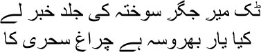
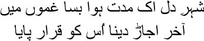
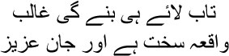
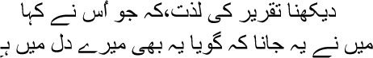
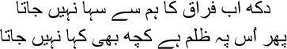
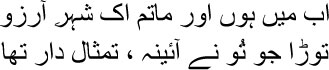

37

Ask after Mir soon, his soul is scorched
Who knows how long the night-lamp will burn
 s you know, Manto bhai, by the time I entered the stage, the last scene was being enacted. We were only waiting for the lord to bring down the curtains. Emperor Shahjahan had two lines of Amir Khusrau’s poetry inscribed on the walls of the Diwan-e-Khas of the Qila Mubarak—‘Agar firdaus bar rue zamin ast, hamin ast o hamin ast o hamin ast.’ If there is heaven on earth it is here, it is here, it is here. When I arrived at Emperor Bahadur Shah’s court, this heaven had been converted to hell. Bahadur Shah ascended the throne in 1837 at the age of sixty-two. There was no such thing as an empire anymore. The British had annexed it all. The only opportunity for displaying royal airs and graces was inside the fort and in a couple of other places. By way of income there was the allowance provided by the British and taxes from a handful of areas by the Yamuna. And do you know the number of people living in the fort? Over two thousand. Most of them were illegitimate children. You cannot imagine, Manto bhai—all these bastards lived like worms. Bahadur Shah actually reigned as the emperor of worms.
s you know, Manto bhai, by the time I entered the stage, the last scene was being enacted. We were only waiting for the lord to bring down the curtains. Emperor Shahjahan had two lines of Amir Khusrau’s poetry inscribed on the walls of the Diwan-e-Khas of the Qila Mubarak—‘Agar firdaus bar rue zamin ast, hamin ast o hamin ast o hamin ast.’ If there is heaven on earth it is here, it is here, it is here. When I arrived at Emperor Bahadur Shah’s court, this heaven had been converted to hell. Bahadur Shah ascended the throne in 1837 at the age of sixty-two. There was no such thing as an empire anymore. The British had annexed it all. The only opportunity for displaying royal airs and graces was inside the fort and in a couple of other places. By way of income there was the allowance provided by the British and taxes from a handful of areas by the Yamuna. And do you know the number of people living in the fort? Over two thousand. Most of them were illegitimate children. You cannot imagine, Manto bhai—all these bastards lived like worms. Bahadur Shah actually reigned as the emperor of worms.
As emperor, he took the name Abul Muzaffar Sirajuddin Muhammad Bahadur Shah Badshah Ghazi. I wanted to laugh. Ghazi? You know what ghazi means, don’t you? A holy warrior. But what war did he ever take part in? He did not have the ability to wage a war. The emperor lacked the courage and self-confidence that such an act needed. During the Sepoy Mutiny he was made to dance like a marionette. He was a mere puppet in the hands of Begum Zeenat Mahal and Khwaja Mehboob Ali Khan. The emperor did whatever Mehboob Ali told him to. And Mehboob Ali was controlled by Begum Zeenat Mahal. Don’t be astonished, my brothers. The harems of Mughal emperors were overseen by eunuchs. When the empire was on its way to disintegration, the eunuchs had grown so powerful that the Badshah followed the eunuch Mehboob’s instructions. Think about it, Manto bhai, when eunuchs wield influence, the downfall of an empire is inevitable.
And our emperor? He was a eunuch too. Yes, Manto bhai, a mental eunuch. He never had to fight a war. He lived off his forefathers’ wealth, displayed royal airs, and wrote some worthless poetry. He had four legal wives: Begum Ashraf Mahal, Begum Akhtar Mahal, Begum Zeenat Mahal, and Begum Taj Mahal. And countless slave girls and concubines. He had fifty-four children—can you imagine? Twenty-two sons and thirty-two daughters. This was how emperors lived, Manto bhai.
The emperor knew very well that the sun was about to set on Timur’s empire. That’s why he could not determine what he should do. He would appear in his durbar every day. Why? He had no idea. What use was it? He had no control over anything. Along with everyone else, I had to be present every day too. My task was to correct the emperor’s ghazals when he wrote them. People would gossip among themselves in court. The emperor might suddenly recite a sher. Cries of ‘Kyabaat! Kyabaat!’ and ‘Marhabba! Marhabba!’ would rise at once in unison. Sometimes the emperor would fall asleep. We would wait for him to wake up and release us for the day.
One day he told me, ‘Come to Salimgarh tomorrow, ustadji.’
— Very well, huzoor. But why?
— We’re going to fly kites. Kite-flying by the Yamuna is a special treat.
— You’ll fly kites?
— It’s been a long time since I did. I had a sudden urge.
I had to put in an appearance at Salimgarh the next morning. After watching the emperor flying kites till lunchtime, I went home for lunch, but I had to go back afterwards. I would have to watch him at play till evening. When he was done flying kites, he made a new demand. I had to write a sher for him about flying kites. I recited one at once. Jahanpanah was thrilled, while I returned in exhaustion to my pigpen. Every day I was made to realize that there’s no such thing as a poet’s life, Manto bhai—all of us lived like servants. The poet puts on his kurta and pajama, combs his hair nattily, dyes his beard brown, and pours perfume over himself—but all of it is overpowered by the stench of perspiration, the rank breath of the slave. Not everyone realizes this, of course. Rubbing shoulders with power now and then makes them consider themselves powerful too. I tell him, dear poet, you’re but a pawn on the chessboard of power.
So, make fun of it. Yes, Manto bhai, the only thing you can do with power is to mock it. If you imagine that defecting from one power centre to another will bring you honour, you’re chasing a mirage. Power will merely use you, and when you are no longer useful, it will kick you into the drain. Which is why the poet must remain true to his talent. One day, perhaps, his gift for verse will be required, along with the finest poetry of the world, to plant the hearts of every living creature on earth in a field that produces an immortal golden harvest. He will go deep into the consoling arms of nature. He will wander about in towns and in ports. He will mingle with crowds. He will assault hopeless inconsistencies with the genius of imagination wherever necessary, in order to create something new. He will go back again, perhaps accompanied by eager cripples, into the arms of comforting nature; to the primitive mother, to the silent, absolving mother Aditi, alone under the sun, amidst the deep blue.
Do you know what a king does when he is handicapped or when he lacks the ability to rule? He writes annoying poems, organizes mushairas, flies kites, and leads parades perched on an elephant. Our emperor didn’t have anything else to do either. He was surrounded by sycophants. They marvelled loudly at every utterance of the emperor’s. In silence I watched the termites eating away at the book of history. Can what is left behind really be called history? Only some stories remain in the powder on the road.
One day Kallu brought a dastango. Grasping his arm, I said, ‘Come with me to the court today, mian.’
— Court? What court?
— The emperor’s court.
— Excuse me, huzoor. I’m not worthy of the royal court.
— Don’t worry, I’ll take you.
— What business do I have there, huzoor?
— You will tell Jahanpanah your dastan.
— Does Jahanpanah listen to dastans?
— Why shouldn’t he? His life itself is an unusual story.
‘Who’s this person you’ve brought, ustadji?’ the emperor asked me.
— You love listening to stories, don’t you, Jahanpanah?
— Of course. Who told this story that you will tell us now, mian?
— Maula Rumi, huzoor.
— Very good.
The emperor began to draw contentedly on his hookah.
— The story is about a rat and a camel, huzoor.
— No human beings in it?
— No. But the rat and camel are human too, huzoor.
— Meaning?
— Some people have a rat hidden in them, huzoor, and others have a camel.
— Superb! Start your story.
— He was a rare sort of rat, huzoor. He used to think of himself as the king of kings.
— King of kings? The emperor began to laugh. —Even a rat considers itself the king of kings?
— Why shouldn’t it? This rat used to proudly perform tasks that other rats wouldn’t even dream of.
The emperor laughed uproariously. —Even rats can be proud, mian?
— If you look at us from the sky, huzoor, each of us is a rat too. Don’t we feel pride?
— Never mind the nonsense. Let’s have the story.
— He may have been a tiny rat, huzoor, but he considered himself a lion. He used to plunge boldly into dangerous situations, and then use his wits to emerge unscathed. The other rats would stare at him in wonder. One night the rat was on his way home through the desert. A camel was sleeping in the desert, huzoor. The rat was trapped in the reins around the camel’s neck. But he was very clever. He managed to extricate himself from the coils.
— And then?
— Very clever people always have evil ideas, huzoor. The rat began to tug at the end of the rope. The camel woke up. He began to follow the rat. The rat told himself, ‘A camel is walking behind me. They’ll stagger in surprise when they see this sight.’ They came across a river on the way. Its currents roared perpetually. Pausing on its bank, the rat wondered how to cross this bottomless stretch of water.
— What did he do? The emperor asked.
— All intelligence fails eventually, huzoor. The rat kept wondering. Then the camel said, ‘There isn’t another rat as intelligent as you. Why have you stopped, mister? Take me across the river.’ The rat said, ‘Don’t talk rubbish. This river is very dangerous. We’ll sink the moment we step into it.’ The camel walked into the water. Calling the rat, he said, ‘It’s not as deep as you think. Look, the water’s only up to my knees. What are you afraid of?’
— That’s true. The emperor said, drawing on his hookah.
— You’re a fool, said the rat. The water may only be up to your knee, but I’ll drown in it.
— Why should you? Is there anyone as clever as you? Your intelligence and your courage will protect you. Come into the water. I will follow you.
— And then?
— The rat decided that he could not be humiliated by this stupid camel. Holding the rope in his mouth, he walked into the water. Buffeted by the terrible current, he reached the opposite bank half-dead. He was groaning on the ground near the camel’s feet. The camel said, ‘Don’t consider yourself a lion, mister rat. Trust those who can see further than you. Your extra cleverness will do you in one day. It’s easy for me to travel long distances. Climb on to my hump, I will take you home.’
— And then?
— Maula Rumi didn’t say anything more, huzoor.
— What does this story mean, ustadji? The emperor looked at me.
I had begun laughing in my head already. The Maula had told the story to tell people to keep their faith in their teachers. But I could see another interpretation too. That rats want to become emperors sometimes. I said, ‘We listen to stories for enjoyment, Jahanpanah. Did you enjoy the story?’
The emperor’s thoughts were limited to the pleasures he wanted to enjoy and how to enjoy them. He went off to Zafar Mahal in Mehrauli quite often. His father had built the palace. The emperor had decorated it according to his own taste. Hunting, decadent pleasures, fountains of joy—these were the uses to which Zafar Mahal was put. And yet the British had announced in 1854 that no one would be allowed to live in the fort after the emperor’s death; they would have to move to a palace near the Qutub Minar. The emperor turned a blind eye to the efforts of the British to wipe out the descendants of Timur. Ghazal sessions were still held in the fort from time to time. I would visit them now and then; sitting there in those soulless mushairas, I realized that the lord would shut down this farce any moment. I was constantly reminded of a sher of Mir sahib’s:

This city of hearts was founded in sorrow years ago
The verdict has come, it too shall be emptied out
I lived well for a few days, my brothers; but the lord would not have mercy on me forever. In 1856, dark clouds gathered again in the sky. The emperor’s heir, and my pupil, Fakhruddin, died. And the British announced that the successor to the emperor would no longer have the title of badshah, or king. He would only be a shahzada, or prince. It was clear that not just the days of Timur’s dynasty, but also of court poets like me, were numbered. An even greater misfortune was that the reign of the nawab of Lucknow came to an end that same year. As you know, Manto bhai, I used to get an annual allowance of five hundred rupees from Nawab Wajid Ali Shah. He had to leave Lucknow and go to Calcutta. If anyone ever deserved the title of nawab, Manto bhai, it was Wajid Ali Shah. His pseudonym was Kaiser. He wrote not just ghazals but also numerous thumris. He was a wonderful singer himself. There was another lovely pseudonym that he had adopted—Akhtarpiya. He wrote several ghazals and thumris under this name as well. It was impossible not to weep when you listened to his thumri in Raga Bhairavi, ‘Babul mora naihar chhuto hi jaay’. I’m leaving home, my father. Every word in it was blue with the agony of exile. When leaving Lucknow he wrote:

I look longingly at the doors and the walls
Be happy, my compatriots, I will be travelling
But I was a street dog, I could not afford to grieve over the end of the Mughal period. I needed money; how was I to survive otherwise? I wrote a letter to Yusuf Ali, the nawab of Rampur. He had taken Farsi lessons from me once; he wrote poetry and was partial to my ghazals. He told me that he wished to anoint me as his teacher. This was all I wanted. The post of ustad to the nawab of Rampur would mean an income. All I needed money for was food and clothes, Manto bhai. I did not think of poetry anymore. Those days had long passed.
I wrote a qaseeda for Queen Victoria in Farsi, strictly for the money, and sent it to the Governor General, Lord Canning, to be forwarded to London. I added a letter, praying that the queen empress show some consideration for this poet. The reply arrived at the beginning of the year of the Mutiny, informing me that a decision on a title and an allowance would be taken after appropriate investigation. But nothing happened thereafter. Who was I, after all? Just a face in the crowd for the queen empress.
I have no shame in admitting to all of you today that I really was an imbecile, Manto bhai. Everything in my life went awry, but still I would imagine that the tide would turn—had the lord really brought me into the world only to be defeated at every step? I remained trapped in hope all my life.

You must succeed, Ghalib
The situation is dire, and life, precious
Despite all this the spring breeze blew for a few days again, Manto bhai. I never set eyes on her, however. But she was my pupil. Her shers made me reflect:

Look at the magic of her words, what she said
Made me feel this was in my heart too
I had chosen the pseudonym of Tark for her. A lady from a noble family of Shahjahanabad, she was of Turkish origin, her forefathers having come here from Bukhara. Tark lost her husband very young. She sought shelter in poetry. Her mother’s bother used to bring her shers to me. I used to run my fingers over her words, touching her body in this fashion. I visited their home now and then. She would always be behind a purdah. Women from families such as hers could not appear before men. To tell you the truth, Manto bhai, I would go just to hear Tark’s voice. Like a gentle wind wafting through the cypress trees. Such sharp, clear diction. And her ghazals held such an unusual glow of imagination. I don’t know if you agree, but I believe that women are different from men in the world of the imagination. Tark would attract me like a secret fragrance, which could be smelt but could never be seen.

I cannot stand this pain of separation anymore
This is injustice, there’s nothing to be said
I never did realize when the fragrance of the perfume vanished. One day I was told at their house that Tark would not meet me anymore. ‘What’s the matter, mian sahib?’ I asked her uncle. ‘Is she ill?’
— No, Mirza sahib. She does not write ghazals anymore.
— Why not?
— She only reads the Quran all day. She doesn’t even leave her room.
— Ya Allah! A poetess of such talent has given up poetry! She could have been a great poet.
— How does our society value women, Mirza sahib? And then she writes poetry on top of that. People think she’s mad.
— Do you think so too?
— No. But we haven’t understood why she withdrew this way.
— Can’t I meet her?
— No, Mirza sahib. She has asked me to tell you not to come here again. The saddest thing of all is that she has ripped up her own ghazals with her own hands.
I didn’t feel like returning home that day. I went to the Yamuna and sat down on its banks. I didn’t realize when evening descended. The currents of the Yamuna kept talking to themselves in the darkness. That was when I saw her. The anxious maiden. She was sitting on a bed of fallen leaves in the orchard, waiting for her lover. The flower-laden trees surrounded her, seemingly telling her, don’t fret, Radhika, he will come, your Shyamrai is certain to arrive. A torrent flowed in front of her. It too seemed to be saying, wait a little longer, there’s the sound of his flute. A frightened doe was drinking water at the stream. And behind a tree, a deer gazed at the maiden, entranced. I realized why Tark had given up writing ghazals. She could no longer bear the weight of each of those words. She would never be able to move the purdah aside and reach her hand out to a friend.

Now grief and I remain in a hopeful city
The mirror you shattered held a thousand images